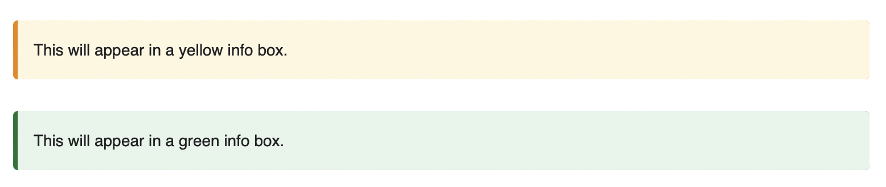

There are different ways to get claat, my choice was downloading the binary from the releases of google's tool page
But you can install it with go, with the following command:
go install github.com/googlecodelabs/tools/claat@latest
Once we downloaded claat we can move it to the bin directory or directly use it in the same dir as the codelab we are going to create.
To make sure claat is installed properly we can type claat into the terminal.
First thing we need to do is create a md file. Then modify it with the contents we want to have.
The title can be set with one number sign #.
Each headline marked with two number signs ## will be a step in our codelab.
Right under each step we can put a duration for each step. Ex, for one min it will look like this:
Duration: 00:01:00
We can also add info boxes.

For the info we have to note like this:
Negative
: This will appear in a yellow info box.
and for the green one:
Positive
: This will appear in a green info box.
Once you have your codelab in place there's only one thing left and that is generate the html 😄.
Go to the dir in which you're working and run the following command:
claat export name_of_the_md_file_to_export